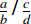

The MathML <mfrac> element is used to display fractions.
<mfrac>numerator denominator</mfrac>
bevelled {{deprecated_inline}}true, the fraction line is bevelled, which means that numerator and denominator are displayed side by side and separated by a slash (/). Otherwise, if set to false (which is the default value), numerator and denominator are on top of each other.class, id, styledenomalign {{deprecated_inline}}left, center (default), and right.text-align instead.displaystylefalse, a more compact layout is used to display formulas. The main effect is that larger versions of operators are displayed, when displaystyle is set to true. See also movablelimits on {{ MathMLElement("mo") }}.hreflinethicknessmedium, thin, and thick are deprecated and will be removed in the future.mathbackground#rgb, #rrggbb and HTML color names.mathcolor#rgb, #rrggbb and HTML color names.numalign {{deprecated_inline}}left, center (default), and right.text-align instead.Sample rendering: 
Your browser rendering:
<math>
<mfrac bevelled="true">
<mfrac>
<mi> a </mi>
<mi> b </mi>
</mfrac>
<mfrac>
<mi> c </mi>
<mi> d </mi>
</mfrac>
</mfrac>
</math>
| Specification | Status | Comment |
|---|---|---|
| {{SpecName("MathMLCore", "#fractions-mfrac", "mfrac")}} | {{Spec2("MathMLCore")}} | Draft specification |
| {{ SpecName('MathML3', 'chapter3.html#presm.mfrac', 'mfrac') }} | {{ Spec2('MathML3') }} | Current specification |
| {{ SpecName('MathML2', 'chapter3.html#presm.mfrac', 'mfrac') }} | {{ Spec2('MathML2') }} | Initial specification |
{{Compat("mathml.elements.mfrac")}}